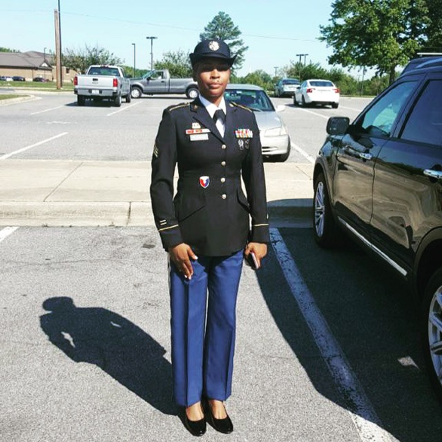
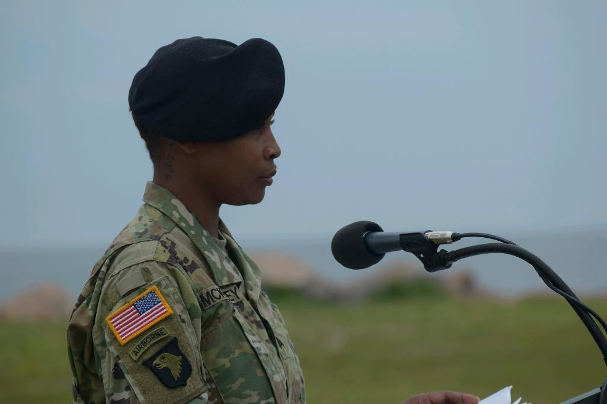

About the Author

Hi, I'm Kalita McKinney
I am a graduate student in the Instruction and Curriculum Leadership program at the University of Memphis. I currently work as a Reading Interventionist and teach civics and enrichment to middle school students.
Before becoming an educator, I served in the U.S. Army and worked in logistics and management. My background in training and developing people has influenced the way I approach teaching and learning.
Why I made this lesson
I have a strong interest in social studies, civics, government, and helping students become confident in expressing their ideas. My goal is to continue growing as an educator and eventually move into educational leadership.
I created this website to share strategies that can help teachers use academic debate to build student confidence, critical thinking, and civic engagement.

Contact
Questions about this lesson? Email [your school email address].